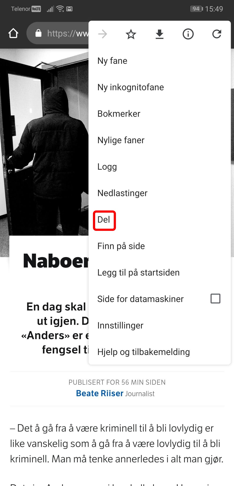
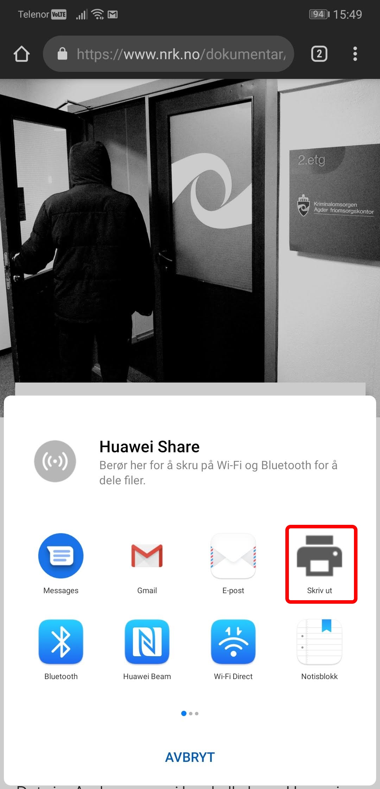

How-to
1. Rull helt opp på toppen av nettsiden og klikk på de 3 prikkene øverst til høyre.
2. Klikk Del.

3. Klikk skriv ut.

4. Velg lagre som PDF og klikk lagre.
5. Åpne filutforskeren på telefonen, du kan finne den ved å søke etter "Fil".
6. Åpne dokumenter kategorien.
7. Åpne dokumentet ditt. Du kan sortere etter nyest ved å klikke på de 3 prikkene øverst til høyre.
8. Du har nå PDF dokumentet lagret på telefonen.
Artikkel som ble brukt i skjermbildene:
https://www.nrk.no/dokumentar/xl/naboer-med-en-mork-fortid-1.14429213